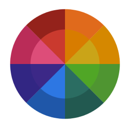

Essa empresa busca ajudar outros sites/ambientes a se tornarem acessíveis, permitindo a inclusão de forma definitiva na sociedade digital e no mercado de trabalho, por meio da utilização do computador como ferramenta
 Leitor de tela
grátis para deficientes visuais
Leitor de tela
grátis para deficientes visuaisFoi feito para ler em voz alta até o mais mínimo detalhe da tela do PC. Pensado para garantir o livre acesso de deficientes visuais às novas tecnologias, é um programa de código aberto e totalmente gratuito. NVDA lê automaticamente tudo o que o cursor do mouse aponta. Funciona com Firefox, Outlook, Word, Excel e muitos aplicativos mais. Logo após a instalação, o programa já está pronto para usar
 Freedom Scientific
Freedom ScientificÉ a maior fabricante mundial de produtos de tecnologia assistiva para pessoas cegas e com baixa visão. A Freedom Scientific é a única empresa com uma linha completa de produtos para deficientes visuais, com softwares para escola, trabalho e casa
Por Freedom Scientific, Fusion, JAWS e ZoomText são uma junção essencial na vida dos deficientes visuais


O Fusion é a ferramenta perfeita e única para indivíduos com qualquer nível de deficiência visual. ZoomText, com ampliação de tela e otimizações visuais para facilitar a visualização da tela, junto com o poder e velocidade do software leitor de tela mais completo do mercado JAWS. Ao juntar o ZoomText com o JAWS, o Fusion possui sintetizadores de voz de alta qualidade como Eloquence e Vocalizer Expressive, teclas de acesso poderosas incluindo navegação na web e uma ampla variedade de opções custodiáveis


No primeiro semestre de 2023, os alunos da 1ª fase do curso de sistemas de informação desenvolveram um projeto denominado de RC ( Reconhecimento de Cores em Tempo Real). O projeto tinha como objetivo desenvolver uma aplicação para reconhecimento de cores em tempo real. O reconhecimento de cores é uma tecnologia que possibilita a identificação das cores presentes em uma imagem ou vídeo

Disponível em: https://curricularizacao.si.unifebe.edu.br/2023/projeto-rc/02/
Disponível em https://curricularizacao.si.unifebe.edu.br/2023/projeto-rc/01/
Disponível em: https://curricularizacao.si.unifebe.edu.br/2023/projeto-rc/03/
